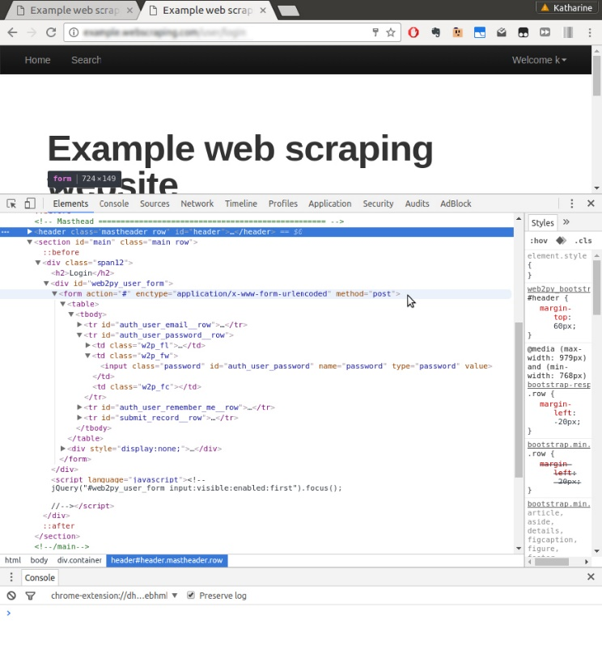
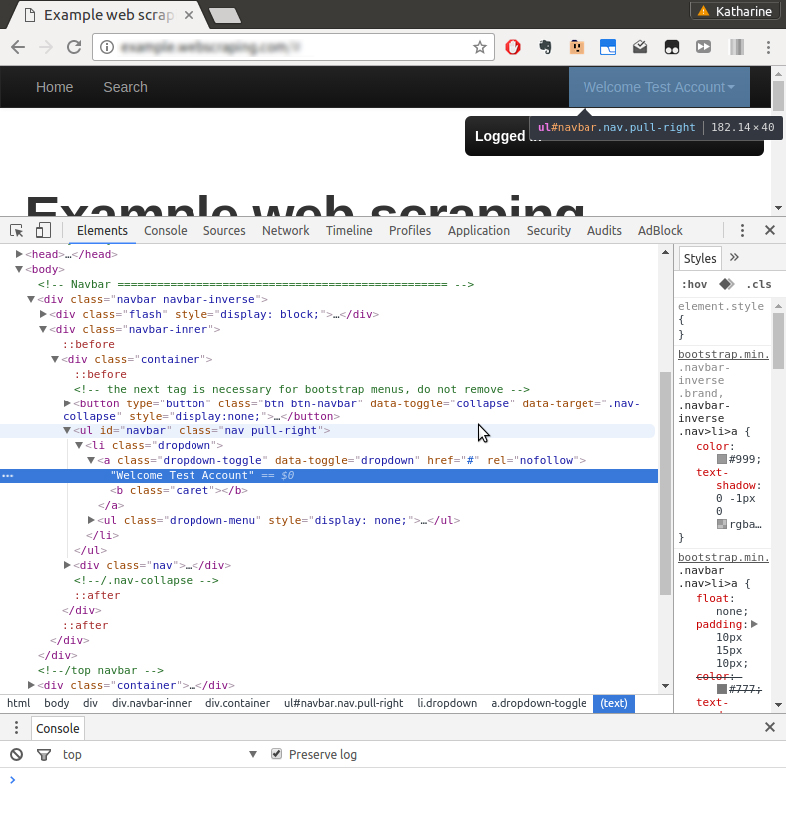
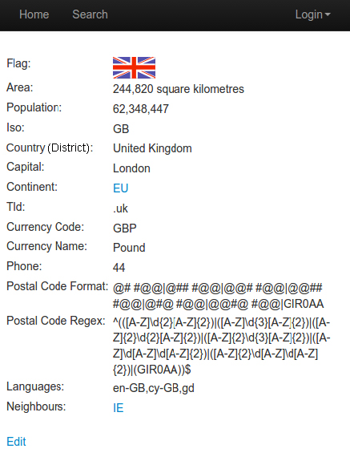
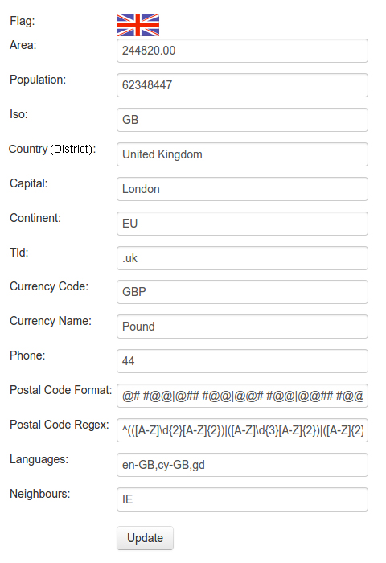
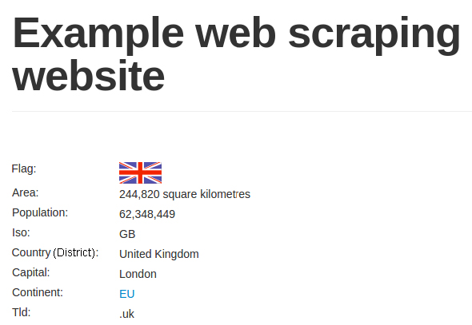

第6章 表单交互
在前面几章中，我们下载的静态网页返回的是相同的内容。而在本章中，我们将与网页进行交互，根据用户输入返回对应的内容。本章将包含如下几个主题：
- 发送
POST请求提交表单；
- 使用cookie和会话登录网站；
- 使用Selenium用于表单提交。
想要和表单进行交互，就需要拥有可以登录网站的用户账号。现在我们需要手工注册账号，其网址为http://example.python-scraping.com/user/register。本章目前还无法实现自动化注册表单，不过在下一章中我们将会介绍处理验证码图像的方法，从而实现自动化表单注册。
 表单方法
表单方法
HTML定义了两种向服务器提交数据的方法，分别是GET和POST。使用GET方法时，会将类似?name1=value1&name2=value2的数据添加到URL中，这串数据被称为“查询字符串”。由于浏览器存在URL长度限制，因此这种方法只适用于少量数据的场景。另外，这种方法通常应当用于从服务器端获取数据，而不是修改数据，不过开发者有时会忽视这一规定。而在使用POST请求时，数据在请求体中发送，而不是在URL中。敏感数据只应使用POST请求进行发送，以避免将数据暴露在URL中。POST数据在请求体中如何表示需要依赖于所使用的编码类型。服务器端还支持其他HTTP方法，比如PUT和DELETE方法，不过这些方法在标准HTML表单中均不支持。
6.1 登录表单
我们最先要实施自动化提交的是登录表单，其网址为http://example. python-scraping.com/user/login。要想理解该表单，我们可以使用浏览器的开发者工具。如果使用完整版的Firebug或者Chrome开发者工具，我们只需提交表单就可以在网络选项卡中检查传输的数据（类似我们在第5章中做的操作）。不过，如果我们使用“Inspect Element”功能的话，只能看到关于表单的信息，如图6.1所示。

图6.1
与如何发送表单有关的几个重要组成部分，分别是form标签的action、enctype和method属性，以及两个input域（在图6.1中，我们扩展了"password"域）。action属性用于设置表单数据提交的HTTP地址，本例中为#，也就是当前URL。enctype属性（或编码类型）用于设置数据提交的编码，本例中为application/x-www-form-urlencoded。而method属性被设为post，表示在请求体中使用POST方法向服务器端提交表单数据。对于每个input标签，最重要的属性是name，它用于设定POST数据提交到服务器端时某个域的名称。
 表单编码
表单编码
当表单使用POST方法时，表单数据提交到服务器端之前有两种编码类型可供选择。默认编码类型为application/x-www-form-urlencoded，此时所有非字母数字类型的字符都需要转换为十六进制的ASCII值。但是，如果表单中包含大量非字母数字类型的字符时，这种编码类型的效率就会非常低，比如处理二进制文件上传时就存在该问题，此时就需要定义multipart/formdata作为编码类型。使用这种编码类型时，不会对输入进行编码，而是使用MIME协议将其作为多个部分进行发送，和邮件的传输标准相同。
当普通用户通过浏览器打开该网页时，需要输入邮箱和密码，然后单击登录按钮将数据提交到服务端。如果登录成功，则会跳转到主页；否则，会跳转回登录页。下面是尝试自动化处理该流程的初始版本代码。
>>> from urllib.parse import urlencode
>>> from urllib.request import Request, urlopen
>>> LOGIN_URL = 'http://example.python-scraping.com/user/login'
>>> LOGIN_EMAIL = 'example@python-scraping.com'
>>> LOGIN_PASSWORD = 'example'
>>> data = {'email': LOGIN_EMAIL, 'password': LOGIN_PASSWORD}
>>> encoded_data = urlencode(data)
>>> request = Request(LOGIN_URL, encoded_data.encode('utf-8'))
>>> response = urlopen(request)
>>> print(response.geturl())
'http://example.python-scraping.com/user/login'
上述代码中，我们设置了邮件和密码域，并将其进行了urlencode编码，然后将这些数据提交到服务器端。当执行最后的打印语句时，输出的依然是登录页的URL，也就是说登录失败了。你会注意到，我们还必须将已经编码的数据作为字节再次进行编码，以便urllib能够接受它。
我们可以使用requests以几行代码实现同样的处理。
>>> import requests
>>> response = requests.post(LOGIN_URL, data)
>>> print(response.url)
'http://example.python-scraping.com/user/login'
requests库可以让我们显式定义要POST的数据，并且可以在其内部进行编码。不过遗憾的是，这段代码仍然会登录失败。
这是因为登录表单十分严格，除邮箱和密码外，还需要提交另外几个域。我们可以从图6.1的最下方找到这几个域，不过由于设置为hidden，所以不会在浏览器中显示出来。为了访问这些隐藏域，下面将使用第2章中介绍的lxml库编写一个函数，提取表单中所有input标签的详情。
from lxml.html import fromstring
def parse_form(html):
tree = fromstring(html)
data = {}
for e in tree.cssselect('form input'):
if e.get('name'):
data[e.get('name')] = e.get('value')
return data
上述代码使用lxml的CSS选择器遍历表单中所有的input标签，然后以字典的形式返回其中的name和value属性。对登录页运行该函数后，得到的结果如下所示。
>>> html = requests.get(LOGIN_URL)
>>> form = parse_form(html.content)
>>> print(form)
{'_formkey': 'a3cf2b3b-4f24-4236-a9f1-8a51159dda6d',
'_formname': 'login',
'_next': '/',
'email': '',
'password': '',
'remember_me': 'on'}
其中，_formkey属性是这里的关键部分，它包含一个唯一的ID，服务器端使用该唯一的ID来避免表单被多次提交的问题。每次加载网页时，都会产生不同的ID，然后服务器端就可以通过这个给定的ID来判断表单是否已经提交过。下面是提交了_formkey及其他隐藏域的新版本登录代码。
>>> html = requests.get(LOGIN_URL)
>>> data = parse_form(html.content)
>>> data['email'] = LOGIN_EMAIL
>>> data['password'] = LOGIN_PASSWORD
>>> response = requests.post(LOGIN_URL, data)
>>> response.url
'http://example.python-scraping.com/user/login'
很遗憾，这个版本依然不能正常工作，因为它再一次返回了登录URL。这是因为我们缺失了另一个必要的组成部分——浏览器cookie。当普通用户加载登录表单时，_formkey的值将会保存在cookie中，然后该值会与提交的登录表单数据中的_formkey值进行对比。我们可以通过response对象来查看cookie及它们的值。
>>> response.cookies.keys()
['session_data_places', 'session_id_places']
>>> response.cookies.values()
['"8bfbd84231e6d4dfe98fd4fa2b139e7f:NalmnUQ0oZtHRItjUOncTrmC30PeJpDgmAqXZEwLtR1RvKyFWBMeDnYQAIbWhKmnqVpdeo5Xbh41g87MgYB-
oOpLysB8zyQci2FhhgUYFA77ZbT0hD3o0NQ7aN_
BaFVrHS4DYSh297eTYHIhNagDjFRS4Nny_8KaAFdcOV3a3jw_pVnpOg
2Q95n2VvVqd1gug5pmjBjCNofpAGver3buIMxKsDV4y3TiFO97t2bSFKgghayz2z9jn_iOox2yn
8Ol5nBw7mhVEndlx62jrVCAVWJBMLjamuDG01XFNFgMwwZBkLvYaZGMRbrls_cQh"',
'True']
你也可以通过Python解释器进行查看，response.cookies是一个特殊的对象类型，称为cookie jar。该对象也可以被传入新的请求中。让我们带上cookie重试一次提交。
>>> second_response = requests.post(LOGIN_URL, data, cookies=html.cookies)
>>> second_response.url
'http://example.python-scraping.com/'
 什么是cookie？
什么是cookie？
cookie是网站在HTTP响应头中传输的少量数据，形如Set-Cookie: session_id=example;。浏览器将会存储这些数据，并在后续对该网站的请求头中包含它们。这样就可以让网站识别和跟踪用户。
这次我们终于成功了！服务器端接受了我们提交的表单值，response的URL是主页。请注意，我们需要使用来自初始请求且与表单数据正确匹配的cookie。该代码片段以及本章中其他登录示例的代码位于本书源码文件的chp6文件夹中。
6.1.1 从浏览器加载cookie
从前面的例子中可以看出，如何向服务器提交它所需的登录信息，有时候会很复杂。幸好，对于这种麻烦的网站还有一个变通方法，即先使用浏览器手工执行登录，然后在Python脚本中复用之前得到的cookie，从而实现自动登录。
不同浏览器存储cookie的格式不同，不过Firefox和Chrome都使用了一种可以通过Python解析的易访问格式：sqlite数据库。

SQLite是一个非常流行的开源SQL数据库。它可以很容易地在很多平台上进行安装，而且在Mac OSX中是预安装的。如果你想在自己的操作系统中下载并安装它，可以查看它的the Download page，或搜索针对你的操作系统的指令。
如果想要查看你的cookie，可以（如果已安装的话）运行sqlite3命令，并附带cookie文件的路径作为参数（如下所示为Chrome的示例）。
$ sqlite3 [path_to_your_chrome_browser]/Default/Cookies
SQLite version 3.13.0 2016-05-18 10:57:30
Enter ".help" for usage hints.
sqlite> .tables
cookies meta
你需要先找到浏览器配置文件的路径。你可以通过搜索你的文件系统，或是在网上搜索你的浏览器及操作系统来找到它。如果你想了解SQLite的表格模式，可以使用.schema，并选择类似其他SQL数据库的语法函数。
除了在sqlite数据库中存储cookie外，一些浏览器（如Firefox）还会将会话直接存储在JSON文件中，这种格式可以很容易地使用Python进行解析。另外，还有一些浏览器扩展，比如SessionBuddy，可以导出会话到JSON文件中。对于登录而言，我们只需要找到合适的会话，其存储结构如下所示。
{"windows": [...
"cookies": [
{"host":"example.python-scraping.com",
"value":"514315085594624:e5e9a0db-5b1f-4c66-a864",
"path":"/",
"name":"session_id_places"}
...]
]}
下面的函数可以用于将Firefox会话解析为Python字典，之后我们可以将其提供给requests库。
def load_ff_sessions(session_filename):
cookies = {}
if os.path.exists(session_filename):
json_data = json.loads(open(session_filename, 'rb').read())
for window in json_data.get('windows', []):
for cookie in window.get('cookies', []):
cookies[cookie.get('name')] = cookie.get('value')
else:
print('Session filename does not exist:', session_filename)
return cookies
这里有一个比较麻烦的地方：不同操作系统中，Firefox存储会话文件的位置不同。在Linux系统中，其路径如下所示。
~/.mozilla/firefox/*.default/sessionstore.js
在OS X中，其路径如下所示。
~/Library/Application Support/Firefox/Profiles/*.default/
sessionstore.js
而在Windows Vista及以上版本系统中，其路径如下所示。
%APPDATA%/Roaming/Mozilla/Firefox/Profiles/*.default/sessionstore.js
下面是返回会话文件路径的辅助函数代码。
import os, glob
def find_ff_sessions():
paths = [
'~/.mozilla/firefox/*.default',
'~/Library/Application Support/Firefox/Profiles/*.default',
'%APPDATA%/Roaming/Mozilla/Firefox/Profiles/*.default'
]
for path in paths:
filename = os.path.join(path, 'sessionstore.js')
matches = glob.glob(os.path.expanduser(filename))
if matches: m
return matches[0]
需要注意的是，这里使用的glob模块会返回指定路径中所有匹配的文件。下面是修改后使用浏览器cookie登录的代码片段。
>>> session_filename = find_ff_sessions()
>>> cookies = load_ff_sessions(session_filename)
>>> url = 'http://example.python-scraping.com'
>>> html = requests.get(url, cookies=cookies)
要检查会话是否加载成功，这次我们无法再依靠登录跳转了。这时我们需要抓取新生成的HTML，检查是否存在登录用户标签。如果得到的结果是Login，则说明会话没能正确加载。如果出现这种情况，你就需要使用Firefox浏览器确认一下是否已经成功登录示例网站。我们可以使用浏览器工具查看网站的User标签，如图6.2所示。

图6.2
浏览器工具中显示该标签位于ID为“navbar”的<ul>标签中，我们可以使用第2章中介绍的lxml库抽取其中的信息。
>>> tree = fromstring(html.content)
>>> tree.cssselect('ul#navbar li a')[0].text_content()
'Welcome Test account'
本节中的代码非常复杂，而且只支持从Firefox浏览器中加载会话。有很多浏览器附加组件和扩展支持保存会话到JSON文件，因此当你需要会话数据用于登录时，可以探索它们作为你的可选项。
在下一节中，我们将看到requests库关于会话的更高级使用（其文档地址为https://docs.python-requests.org/en/master/user/advanced/#session-objects），可以让我们在使用Python进行抓取时更轻松地利用浏览器会话。
6.2 支持内容更新的登录脚本扩展
既然我们可以通过脚本进行登录，那么我们也可以继续扩展该脚本，添加代码使其能够更新国家（或地区）数据。本节中使用的代码位于本书源码文件的chp6文件夹中，其名分别为edit.py和login.py。
如图6.3所示，每个国家（或地区）页面底部均有一个Edit链接。

图6.3
在登录情况下，点击该链接将会前往另一个页面，在该页面中所有国家（或地区）属性都可以进行编辑，如图6.4所示。

图6.4
这里我们编写一个脚本，每次运行时，都会使该国家（或地区）的人口数量加1。首先是重写login函数，以利用Session对象。这样可以使我们的代码更加整洁，并且可以让我们保持当前会话的登录状态。新的代码如下所示。
def login(session=None):
""" Login to example website.
params:
session: request lib session object or None
returns tuple(response, session)
"""
if session is None:
html = requests.get(LOGIN_URL)
else:
html = session.get(LOGIN_URL)
data = parse_form(html.content)
data['email'] = LOGIN_EMAIL
data['password'] = LOGIN_PASSWORD
if session is None:
response = requests.post(LOGIN_URL, data, cookies=html.cookies)
else:
response = session.post(LOGIN_URL, data)
assert 'login' not in response.url
return response, session
现在无论是否存在会话，我们的登录表单都可以正常工作。默认情况下不使用会话，并期望用户使用cookie来保持登录。不过，对于一些表单来说会有问题，所以在扩展登录函数时，会话功能十分有用。下一步，我们需要通过复用parse_form()函数，抽取国家（或地区）的当前人口数量值。
>>> from chp6.login import login, parse_form
>>> session = requests.Session()
>>> COUNTRY_URL = 'http://example.python-scraping.com/edit/United-Kingdom-239'
>>> response, session = login(session=session)
>>> country_or_district_html = session.get(COUNTRY_OR_DISTRICT_URL)
>>> data = parse_form(country_or_district_html.content)
>>> data
{'_formkey': 'd9772d57-7bd7-4572-afbd-b1447bf3e5bd',
'_formname': 'places/2575175',
'area': '244820.00',
'capital': 'London',
'continent': 'EU',
'country_or_district': 'United Kingdom',
'currency_code': 'GBP',
'currency_name': 'Pound',
'id': '2575175',
'iso': 'GB',
'languages': 'en-GB,cy-GB,gd',
'neighbours': 'IE',
'phone': '44',
'population': '62348448',
'postal_code_format': '@# #@@|@## #@@|@@# #@@|@@## #@@|@#@ #@@|@@#@
#@@|GIR0AA',
'postal_code_regex': '^(([A-Z]d{2}[A-Z]{2})|([A-Z]d{3}[A-Z]{2})|([AZ]{
2}d{2}[A-Z]{2})|([A-Z]{2}d{3}[A-Z]{2})|([A-Z]erd[A-Z]d[A-Z]{2})|([AZ]{
2}d[A-Z]d[A-Z]{2})|(GIR0AA))$',
'tld': '.uk'}
然后为人口数量加1，并将更新提交到服务器端。
>>> data['population'] = int(data['population']) + 1
>>> response = session.post(COUNTRY_OR_DISTRICT_URL, data)
当我们再次回到国家（或地区）页时，可以看到人口数量已经增长到62,348,449，如图6.5所示。

图6.5
读者可以对任何字段随意进行修改和测试，因为网站所用的数据库每个小时都会将国家（或地区）数据恢复为初始值，以保证数据正常。在the edit script中还包含修改货币字段的代码，可以作为另一个例子来使用。你还可以修改其他国家（或地区）的信息用于练习。
需要注意的是，严格来说，本例并不算是网络爬虫，而是广义上的网络机器人。这里使用的表单技术同样可以应用于访问你想抓取数据的复杂表单的交互当中。请确保将新的自动化表单的力量用于良好的用途，而不是垃圾邮件或恶意内容机器人。
6.3 使用Selenium实现自动化表单处理
尽管我们的例子现在已经可以正常运行了，但是我们会发现每个表单都需要大量的工作和测试。我们可以使用第5章中介绍的Selenium减轻这方面的工作。由于Selenium是基于浏览器的解决方案，因此它可以模拟许多用户交互操作，包括点击、滚动以及输入。如果你通过类似PhantomJS的无界面浏览器使用Selenium，那么你还能并行及扩展你的处理过程，因为它比完整浏览器的开销要更少一些。

使用完整的浏览器对于“人类化”交互来说同样是个很好的解决方案，尤其是当你使用的是知名浏览器，或类似浏览器的头部时，可以将你与其他更像机器人的标识区分开。
使用Selenium重写我们的登录和编辑脚本相当简单，不过我们必须先查看页面，找到要使用的CSS或XPath标识。通过浏览器工具进行该操作时，我们将会注意到对于登录表单和国家（或地区）编辑表单来说，登录表单拥有易于识别的CSS ID。现在，我们可以使用Selenium重写登录和编辑功能。
首先，编写获取驱动以及登录的方法。
from selenium import webdriver
from selenium.webdriver.common.keys import Keys
from selenium.webdriver.common.by import By
from selenium.webdriver.support.ui import WebDriverWait
from selenium.webdriver.support import expected_conditions as EC
def get_driver():
try:
return webdriver.PhantomJS()
except Exception:
return webdriver.Firefox()
def login(driver):
driver.get(LOGIN_URL)
driver.find_element_by_id('auth_user_email').send_keys(LOGIN_EMAIL)
driver.find_element_by_id('auth_user_password').send_keys(
LOGIN_PASSWORD + Keys.RETURN)
pg_loaded = WebDriverWait(driver, 10).until(
EC.presence_of_element_located((By.ID, "results")))
assert 'login' not in driver.current_url
在这里，get_driver函数先尝试获得PhantomJS的驱动，因为它速度更快，并且在服务器上安装更加容易。如果获取失败，则使用Firefox。login函数使用作为参数传递的driver对象，并使用浏览器驱动在第一次加载页面时登录，然后使用驱动的send_keys方法向识别出的待输入元素中写入内容。Keys.RETURN发送的是回车键的信号，在许多表单中该键都会被映射为提交表单。
我们还使用了Selenium的显式等待（WebDriverWait以及表示期望条件的EC），这样我们可以告知浏览器进行等待，直到遇到指定的元素或条件。在本例中，我们知道登录后的主页显示中包含ID为“results”的CSS元素。WebDriverWait对象将会为该元素的加载等待10秒钟的时间，超过该时间后抛出异常。我们可以很容易地关闭该等待，或是使用其他期望条件来匹配我们当前加载的页面行为。

想要了解更多关于Selenium显式等待的知识，我推荐你阅读其Python版本的文档，地址为http://selenium-python.readthedocs.io/waits.html。显式等待优于隐式等待，因为你可以明确告知Selenium你想要等待的是什么，并且可以确保你希望交互的页面部分已经被加载。
既然我们已经获得了Web驱动，并且成功登录网站，那么此时我们希望可以与表单进行交互，修改人口数量。
def add_population(driver):
driver.get(COUNTRY_OR_DISTRICT_URL)
population = driver.find_element_by_id('places_population')
new_population = int(population.get_attribute('value')) + 1
population.clear()
population.send_keys(new_population)
driver.find_element_by_xpath('//input[@type="submit"]').click()
pg_loaded = WebDriverWait(driver, 10).until(
EC.presence_of_element_located((By.ID, "places_population__row")))
test_population = int(driver.find_element_by_css_selector(
'#places_population__row .w2p_fw').text.replace(',', ''))
assert test_population == new_population
这里有关Selenium使用的唯一新功能是clear方法，它用于清空表单的输入值（而不是在输入域结尾处添加）。我们还使用了元素的get_attribute方法，从页面的HTML元素中获得指定的属性。因为我们正在处理的是HTML的input元素，因此我们需要得到value属性，而不是检查text属性。
现在我们已经实现了使用Selenium将人口数量加1的所有方法，下面我们可以运行该脚本，类似如下所示。
>>> driver = get_driver()
>>> login(driver)
>>> add_population(driver)
>>> driver.quit()
由于我们的assert语句通过了，所以我们知道使用这个简单脚本更新人口数量的操作已经成功了。
使用Selenium与表单交互还有很多方式，我鼓励你通过阅读文档以更多地了解。Selenium对那些调试有问题的网站尤其有帮助，因为我们拥有使用它的save_screenshot方法查看已加载浏览器截图的能力。
6.3.1 网络抓取时的“人类化”方法
一些网站通过特定行为检测网络爬虫。在第5章中，我们介绍了如何通过避免点击隐藏链接的方式避免进入蜜罐。下面再给出一些提示，以使在线抓取内容时的表现更像人类。
- 利用请求头：我们介绍的大部分抓取库都可以改变请求头，允许你修改类似
User-Agent、Referrer、Host以及Connection等内容。此外，当使用类似Selenium这样基于浏览器的抓取器时，你的爬虫看起来更像是使用正常请求头的普通浏览器。你可以通过打开浏览器工具，在Network选项卡中查看最近的请求，来了解浏览器正在使用的请求头是什么。这可能会让你更好地了解该站点接受的请求头是什么。
- 添加延时：一些爬虫检测技术使用时间确定表单填写速度是否过于迅速，或是页面加载后的链接点击速度是否过快。为了表现得更像人类，可以在与表单交互时添加合适的延时，或是使用
sleep在请求之间添加延时。这同样也是礼貌的抓取网站的方式，可以避免网站过载。
- 使用会话和cookie：正如我们本章所介绍的，使用会话和cookie可以帮助你的爬虫更容易地定位网站，并且可以让你表现得更像是普通浏览器。通过在本地保存会话和cookie，你可以选择暂离时的会话，使用已保存的数据恢复抓取。
6.4 本章小结
在抓取网页时，和表单进行交互是一个非常重要的技能。本章介绍了两种交互方法：第一种是分析表单，手工生成期望的POST请求，并利用浏览器会话和cookie保持登录；第二种则是使用Selenium重新实现这些交互操作。我们还介绍了一些可以让你的爬虫更加“人类化”的提示。
下一章，我们将会继续扩展表单相关的技能，学习如何提交需要发送验证码图像答案的表单。